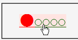
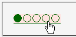

フロート化していない:first-letter擬似要素にスタイルが設定された要素が動的擬似クラス（:hoverなど）にマッチすると、擬似要素に設定したスタイルが失われてしまう。
<style type="text/css">
p#f:first-letter {
font-size: 2em;
color: #ff0000;
}
a:hover {
background: #ffe4e1;
}
</style>
<p id="f"><a href="../mozilla.html">●○○○○</a></p>
マウスポインタなどをリンクに乗せたときに背景色を変化させています。実際にポイントして、1文字目の文字サイズと前景色が維持されるかを確認してください。
マウスポインタを乗せた状態です。
WinIE6.0での表示（標準モード）
Moz1.0.2での表示（標準モード）
同様の現象がBugzillaに登録されています。以下を参照してください。
Moz1.0.2/1.2.1では標準・互換の両モードで不具合の発生が確認されました。